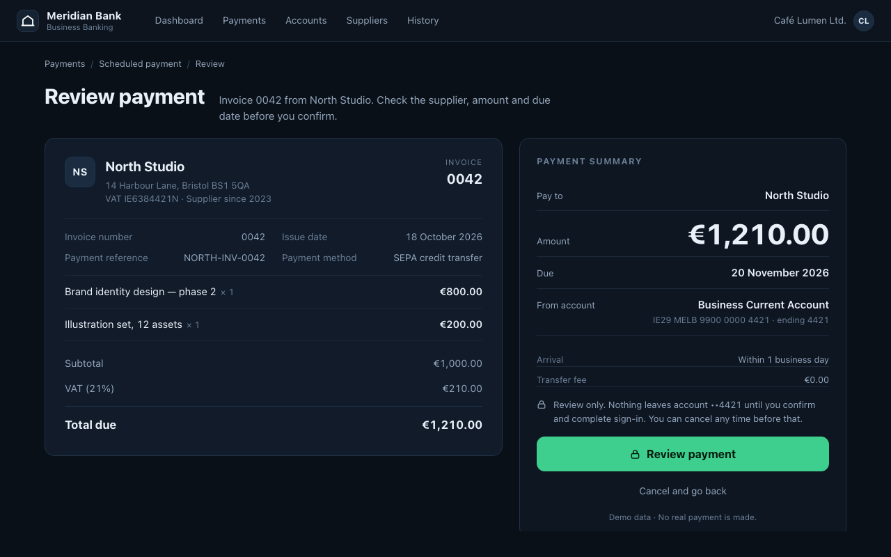

Loading the approved components…
Approved component gallery · open dataset
Every component here was reviewed against the Atelier harness and the invoice review task. The prompt lab uses this gallery as its approved visual vocabulary. The dataset is MIT licensed and stored as JSON next to this page.

The approved reference render. The components below are the reusable vocabulary extracted from it. Open the prompt lab ↗
Loading the approved components…